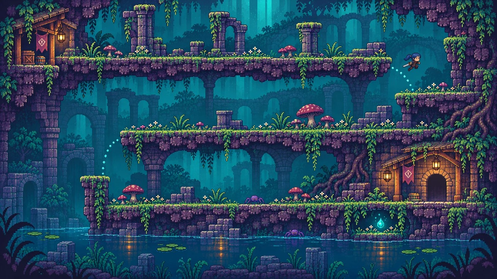
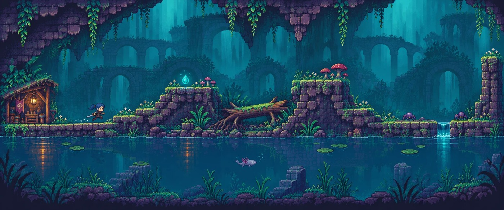

The Flooded Sanctuary
Level 1-2's look, after your four mockups: mossy purple stone ruins in a teal-lit cavern forest, lantern huts, red mushrooms, deep water under everything. A fresh tileset for it, made the way the Sunlit Woodland kit was, and avoiding what went wrong with the first purple kit: black insides, a striped fill, and a level too dark to read.
What 1-2 needs
1-2, The Gate Road, is hopping over water: stone islands, then bigger masses above. It keeps the flooded-ruins look; the old purple kit that 1-1 used is retired. Everything below is new art for it.


| Piece | In the game today | Status |
|---|
One request for the export step: keep each sheet's own colours. The last kit's export snapped every pixel to fixed colour ramps, which turned tree trunks red and leaves blue; I had to redo it from the source images.
How to use this book
F1 and F3 are the stone everywhere, F5 the islands 1-2 is built on, F13 the distance behind it. Make the rest once those read well in the game.
- Attach the images each card lists. They are in
docs/art-production/platformer-attach/: S1 to S4 are your mockups. S1 goes with every card. - Press Copy and paste the prompt into your image model. The copy includes the shared rules unless you untick the box at the top.
- Check the result against the checklist. If it falls short, use a fix from If the image falls short.
- Save it under the card's file name and hand it to me exactly as the generator made it, with the source images included as last time.
- Tick it done. Ticks are saved in this browser only.
How a level is assembled
Collision first, then skin
- The level is blocked out as solid masses with flat floors, approved before any art.
- The stone's art is painted along the edges of those masses (F1, F2) and filled with stone inside (F3). No black inside a mass.
- Pieces she stands on have a flat walking line at the height the card gives.
Readable in a moody place
- The mood comes from the teal distance and the water, not from darkness on the play.
- What hurts looks like it hurts; what she stands on is clearly lit on top.
Parallax and light
- Cavern light 0.05 · far ruins 0.15 · mid ruins 0.35 · playfield 1.0 · one foreground band.
- Lanterns are lights in the engine: paint the flame and glass, never the halo.
Images to attach
All in docs/art-production/platformer-attach/.
The stone
The mossy purple stone of every ledge, its edges, its inside, and the ruins standing on it.
Islands, pillars, the log and the ceiling
What she hops across the flood on, and the cavern roof above.
The water
The flood itself, and what lies in it.
Hut, doorway, flora and thorns
The level's start and end, the plants that dress it, and the things that act.
Far ruins, light and foreground
The teal distance behind the play and the one dark band in front of it.
Check every result
Every image
- Put it next to S1. It looks like the same artist made both.
- It is real pixel art: hard square pixels on one even grid, no blur, no soft gradients.
- No text, labels, grid lines or watermarks ; transparent where the card says so.
- Clear: no black masses; every ledge reads at a glance.
Ground and pieces
- Every walking line is dead straight, at exactly the height the card gives.
- Widths and openings match the card's numbers: lay a ruler on them.
- Undersides break up with clods, roots and stones, never a straight edge.
Things
- The thorns read as danger at a glance, at game size.
Backdrops
- The left and right edges join.
- Each is paler and hazier than the layer in front of it.
- Nothing in it looks like a ledge she could stand on.